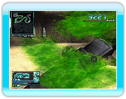
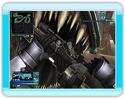

13 |
Comment se débarrasser des ennemis |
 |
|
Onslaught possède 2 systèmes de commandes qui vous permettent de vous débarrasser des ennemis, utilisant les propriétés uniques du Nunchuk et de la télécommande Wii.

Du fluide insectoïde peut vous éclabousser lorsque vous attaquez les ennemis à bout portant. Si vous recevez du fluide insectoïde, votre champ de vision est bloqué. De plus, vous subissez constamment des dégâts si vous avez trop de fluide insectoïde sur vous.
Balancez le Nunchuk pour essuyer le fluide insectoïde. *Vous n'êtes pas éclaboussé par le fluide insectoïde lorsque vous attaquez avec le fouet laser.
Pendant le combat, certaines créatures ennemies peuvent s'accrocher à vous. Lorsque cela arrive, les commandes sont inutilisables et vous subissez des dégâts tant que la créature est sur vous.
Secouez rapidement le Nunchuk et la télécommande Wii pour vous en débarrasser. |
 |
 |
 |